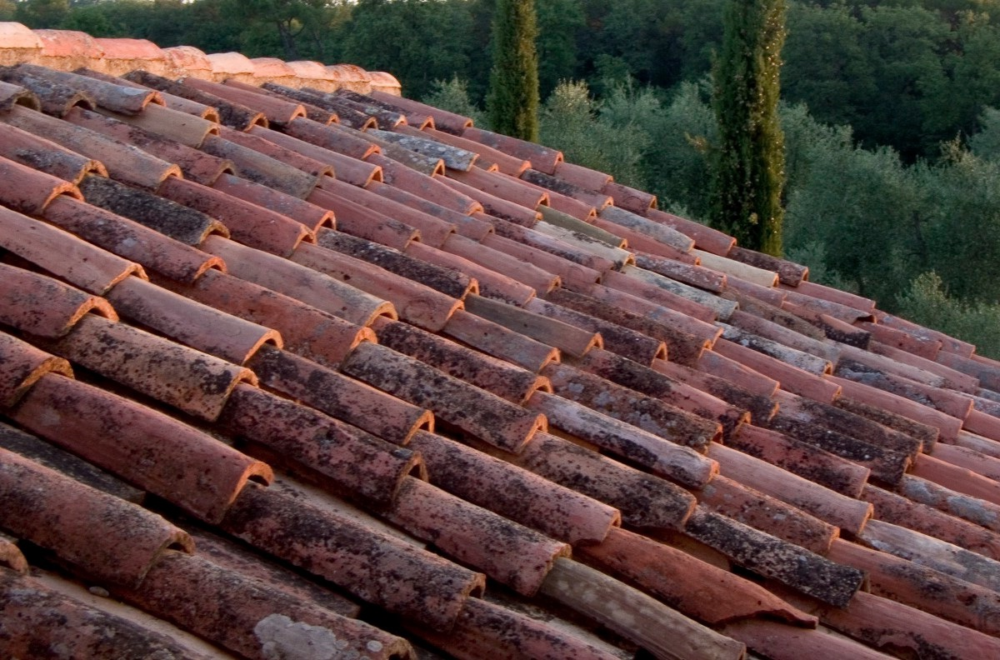

<!DOCTYPE html>
<!--[if IEMobile 7 ]><html class="no-js iem7"><![endif]-->
<!--[if lt IE 9]><html class="no-js lte-ie8"><![endif]-->
<!--[if (gt IE 8)|(gt IEMobile 7)|!(IEMobile)|!(IE)]><!--><html class="no-js"><!--<![endif]-->
<head>

  <!-- Global site tag (gtag.js) - Google Analytics -->
<script async src="https://www.googletagmanager.com/gtag/js?id=UA-133644627-1"></script>
<script>
  window.dataLayer = window.dataLayer || [];
  function gtag(){dataLayer.push(arguments);}
  gtag('js', new Date());

  gtag('config', 'UA-133644627-1');
</script>
<script>
var _hmt = _hmt || [];
(function() {
  var hm = document.createElement("script");
  hm.src = "https://hm.baidu.com/hm.js?0cd1e61b44b7de7c5a6f7ab129d333f5";
  var s = document.getElementsByTagName("script")[0];
  s.parentNode.insertBefore(hm, s);
})();
</script>

  <meta charset="utf-8">
  <title>
  
  Chapter 3 Photographic Exposure - 羊村科技
  

  </title>
  <meta name="author" content="">
  <meta name="description" content="">

  <meta name="HandheldFriendly" content="True">
  <meta name="MobileOptimized" content="320">
  <meta name="viewport" content="width=device-width, initial-scale=1">

  <link href="asset/css/screen.css" media="screen, projection" rel="stylesheet" type="text/css">
  <link href="atom.xml" rel="alternate" title="羊村科技" type="application/atom+xml">
  <script src="asset/js/modernizr-2.0.js"></script>
  <script src="asset/js/jquery.min.js"></script>
  <script src="asset/highlightjs/highlight.pack.js"></script>
  <link href="asset/highlightjs/styles/solarized_light.css" media="screen, projection" rel="stylesheet" type="text/css">
  <script>hljs.initHighlightingOnLoad();</script>

  <style type="text/css">
  .cat-children-p{ padding: 6px 0px;}
  .hljs{background: none;}
  </style>
  <script type="text/javascript">
  var isAddSildbar = true;
  </script>
  <script src="asset/js/octopress.js" type="text/javascript"></script>
</head>
<script type="text/javascript">
//链接新开窗口
function addBlankTargetForLinks () {
  $('a[href^="http"]').each(function(){
      $(this).attr('target', '_blank');
  });
}
$(document).ready(function(event) {
  addBlankTargetForLinks();
});
</script>
<body   >
  <header role="banner"><hgroup>
  <h1><a href="index.html">羊村科技</a></h1>

    <h2></h2>

</hgroup>

</header>
  <nav role="navigation"><ul class="subscription" data-subscription="rss">
  <li><a href="atom.xml" rel="subscribe-rss" title="subscribe via RSS">RSS</a></li>

</ul>

<form action="http://google.com/search" method="get">
  <fieldset role="search">
    <input type="hidden" name="q" value="site:desility.github.io/yangcun" />
    <input class="search" type="text" name="q" results="0" placeholder="Search"/>
  </fieldset>
</form>

<ul class="main-navigation">

  <li id=""><a target="_self" href="index.html">主页</a></li>

  <li id=""><a target="_self" href="archives.html">存档</a></li>

  <li id=""><a target="_blank" href="links.html">外部资源</a></li>

</ul>

</nav>
  <div id="main">
    <div id="content">
 
<div>
	<article class="hentry" role="article">
	<header>
			  	<h1 class="entry-title">Chapter 3 Photographic Exposure</h1>
				<p class="meta"><time datetime="2019-01-30T20:34:22-06:00" pubdate data-updated="true">2019/1/30</time></p>
			 </header>
		  	<div class="entry-content">
			  	<p>Photography is all about light.</p>

<p>Controlling how much light gets into the camera and how it gets there is one of the most important parts of learning photography.</p>

<p>Getting the correct exposure for a given scene is important for the highest quality photographs, but that’s only part of the story, as exposure is also a creative tool, allowing you to make your pictures look the way you want them to.<br/>
<br/>
<span id="more"></span><!-- more --></p>

<h2 id="toc_0">3.1   Aperture</h2>

<p>**THE BASICS **</p>

<hr/>

<ol>
<li>The aperture controls the volume of light that enters the camera by adjusting the<br/>
size of a hole in the camera’s lens</li>
<li>A large hole lets in lots of light and is defined by a small number (ex: ƒ/4)</li>
<li>A small hole lets in a small amount of light and is defined by a large number (ex: ƒ/16)</li>
<li>The smaller the aperture’s hole, the more things are in focus near-to-far in a scene; when the aperture hole is large, fewer things are in focus near-to-far</li>
<li>The aperture value is either set by the camera in one of the automatic shooting modes, or set by the photographer in manual mode</li>
</ol>

<p>Like the iris in your eye, your camera’s aperture is a hole in the lens that changes size, regulating the volume of light that enters the camera. As the aperture opens to a larger hole, it lets more light into the camera. Conversely, a smaller hole  will let less light into the camera. Though the term aperture is most often used, you will sometimes see apertures referred to as f-stops, often with an italicized “ƒ” and a slash, as in ƒ/8. The terms aperture and ƒ-stop are interchangeable.</p>

<p>In addition to its function of controlling the volume of light that enters the camera, the aperture can also alter the amount of things that are in focus in your photographs. A smaller aperture hole will have more things in focus near-to-far in a scene, while a larger aperture hole will allow you to focus on one spot in your scene and blur things that are closer to or farther from the camera. This is called <strong>depth of field</strong> or sometimes depth of focus. So, the aperture is both a technical and a creative control.</p>

<p>In order to predict and repeat a certain volume of light entering the camera, a particular aperture’s “hole size” is expressed by a number. So, a very small aperture hole is ƒ/22, a large hole is ƒ/4. These numbers can be a bit confusing at first because they seem contrary. If you can just remember that a small aperture hole is expressed by a big number and a large aperture hole is expressed by a small number, you’ll be fine.</p>

<p>The largest aperture (remember, smaller number) available on a lens varies depending on the type of lens, the lens design and the cost of the lens, but most lenses start with aperture numbers around ƒ/2.8, ƒ/3.5 or ƒ/4. The bigger the maximum aperture on a lens, the “faster” that lens is said to be, as it lets more light into the camera. The smallest aperture (remember, bigger number) on a given lens also varies, but most lenses have ƒ/16 or ƒ/22 as their smallest aperture.</p>

<p>Apertures have a standard set of numbers that are “whole” apertures or “whole stops.” Moving from one aperture setting to the next whole aperture setting either doubles the exposure by letting twice as much light into the camera or cuts the exposure in half by letting in half as much light in. Photographers refer to this as changing the exposure by a “<strong>stop</strong>.” The traditional sequence of aperture settings starts at the largest aperture available and progresses like this:</p>

<table>
<thead>
<tr>
<th>ƒ/4</th>
<th>ƒ/5.6</th>
<th>ƒ/8</th>
<th>ƒ/11</th>
<th>ƒ/16</th>
<th>ƒ/22</th>
</tr>
</thead>

<tbody>
</tbody>
</table>

<p>So, going from ƒ/4 to ƒ/5.6 is thought of as “one stop less” exposure (because the volume of light gets cut in half). Going from ƒ/16 to ƒ/8 is “two stops more” exposure (because the volume of light has been doubled by two whole apertures.</p>

<p>With the digital controls on modern cameras, you have the ability to change by smaller increments of volume, cutting those “twice” and “half” pieces into “one-third less” and “one-third more.” This is great, because it gives you finer control over the volume of light that is let into your camera. So, your camera can set aperture settings in a 1/3-stop sequence like:</p>

<table>
<thead>
<tr>
<th>ƒ/5.6</th>
<th>ƒ/6.3</th>
<th>ƒ/7.1</th>
<th>ƒ/8</th>
<th>ƒ/9</th>
<th>ƒ/10</th>
<th>ƒ/11</th>
</tr>
</thead>

<tbody>
</tbody>
</table>

<p>Aside from its function of letting a prescribed volume of light into the camera, aperture can also dramatically alter the way focus occurs in images. The smaller the aperture (like ƒ16 or ƒ/22), the more things are in focus near-to-far in your photographs. The larger the aperture, (like ƒ/2.8 or ƒ/4) the fewer things are in focus near-to-far in your photographs.</p>

<p><strong>Apertures</strong><br/>
</p>

<p>Standard Whole Apertures</p>

<p><strong>Setting The Aperture</strong></p>

<p>Setting the aperture on your camera is accomplished differently, depending on what exposure mode you have set on your camera:</p>

<ul>
<li><strong>Aperture Priority Mode</strong> allows you to set
the aperture you want and the camera sets the shutter speed for you.</li>
<li><strong>Manual Mode</strong> will allow you to set the
aperture you want and then you will have to manually set the correct shutter speed for that lighting condition.</li>
</ul>

<p>See the <strong>Exposure Modes</strong> section  for more information.</p>

<p>Here, an aperture of ƒ/16 provides lots of depth of field, so both the horizon and nearby objects are in focus.</p>

<p></p>

<h2 id="toc_1">3.2   Shutter Speed</h2>

<p><strong>THE BASICS</strong></p>

<hr/>

<ol>
<li>The shutter controls the length of time that<br/>
light has to enter the camera</li>
<li>Shutter speeds are expressed in fractions<br/>
of seconds (ex: 1/250 of a second, usually<br/>
just 1/250 or even just “250”)</li>
<li>A long shutter speed lets in lots of light and<br/>
is defined by a large number (ex: 1/2 or 1/8)</li>
<li>A short shutter speed lets in a small<br/>
amount of light and is defined by a small<br/>
number (ex: 1/500 or 1/1000)</li>
<li>The shorter the shutter speed, the more the<br/>
camera can stop motion in the frame; the<br/>
longer the shutter speed, the more motion<br/>
in the frame will be blurred</li>
<li>The shutter speed is either set by the<br/>
camera in one of the automatic shooting<br/>
modes, or set by the photographer in<br/>
manual mode</li>
</ol>

<p>Whether the goal is stopping fast action or creating a blur, the shutter is the setting that allows you to control the length of time light enters the camera. The shutter is actually one of the most creative controls that there is in photography, allowing you to express the element of time in your images. Sometimes, you’ll want to stop the action of a quickly moving subject with a fast shutter speed. Other times, you’ll want to blur the subject’s motion with a slow shutter speed.</p>

<p>For most of your photographs, you will use shutter speeds that are fractions of a second, like 1/125 of a second. Because of that, shutter speed settings on the camera can be a bit confusing at first because many camera settings leave off the top part of the fraction that they are expressing, so a small number (1/250) looks like a big one (250). The key is to remember that the numbers are fractions so “500” is actually a shorter amount of time than “250”.</p>

<p>Action in your scene can be stopped by using a fast shutter speed like 1/250, 1/500 or 1/1000 of a second. Conversely, if you want to blur the motion in a scene, you can use a slow shutter speed like 1/30, 1/15 or 1/8 of a second.</p>

<p>Not long ago in photography, most cameras had a prescribed set of shutter speeds that were the same on nearly every camera. Moving from one shutter speed to the speed next to it on the camera either doubled the exposure or cut it in half by letting the shutter stay open for either twice as much or half as much time. The traditional sequence of shutter speeds started at 1 second, then moved to 1/2 a second, 1/4, 1/8, 1/15, 1/30, 1/60, 1/125, 1/250, 1/500 and 1/1000 of a second. Note that there are a couple of “fudge factors” where the numbers aren’t exactly half or double to make the numbers more even as the sequence progresses.</p>

<p>Just like with aperture, photographers refer to changing the exposure by doubling or cutting it in half as changing the exposure by a “stop.” So, going from 1/15 of a second to 1/30 of a second is thought of as “one stop less” exposure (because the shutter speed gets cut in half). Going from 1/250 of a second to 1/60 of a second is “two stops more” exposure because the shutter has been slowed by two whole shutter speeds.</p>

<p>Now, with electronic controls on our cameras, most cameras have the ability to change by smaller increments of time, cutting those “twice” and “half” pieces into “one-third less” and “one- third more.” This is great, because it gives you finer-grained control over how motion is stopped or blurred in your photographs.</p>

<p></p>

<p>When using slower shutter speeds, you may need to have the camera on a tripod or some other steady support so the camera is stationary and the subject’s movement can be recorded. A rule of thumb is that most people can hand-hold a camera without a tripod and without creating camera shake at shutter speeds that are 1/60 of a second and shorter. This changes as you change the focal length on your camera’s lens as <strong>telephoto</strong> or “long” lenses will tend to magnify camera shake and <strong>wide-angle</strong> or “short” lenses will tend to minimize it.</p>

<p>To minimize camera shake, practice maintaining a steady stance while making photographs and using a gentle squeeze on the shutter release button rather than stabbing it. As you’re photographing, you may also want to look around you for places that you can lean against, sit on or prop your camera on to help keep you and your camera steady.</p>

<p></p>

<p><strong>Setting The Shutter Speed</strong></p>

<p>Setting the shutter’s speed is accomplished differently, depending on what exposure mode you have set on your camera:<br/>
•<strong>Shutter Priority Mode</strong> allows you to set<br/>
the shutter speed you want and the camera sets the aperture for you.<br/>
•<strong>Manual Mode</strong> will allow you to set the<br/>
shutter speed you want and then you will have to manually set the correct aperture for that lighting condition.</p>

<p>See the <strong>Exposure Modes</strong> section for more information.<br/>
</p>

<p><em>Here, a shutter speed of 1/1000 of a second froze the motion of the water</em></p>

<p><strong>Panning</strong><br/>
**Panning **is a technique that can be used when photographing fast- moving objects.</p>

<p>A slow shutter speed is used and the camera is moved in the direction of the subject’s movement, keeping the subject in roughly the same position in the frame. This keeps the subject somewhat stationary and gives a motion blur to the background.<br/>
</p>

<p>Here, the exposure was ƒ/22 at 1/8 of a second.</p>

<h2 id="toc_2">3.3   ISO:   Sensitivity to  Light</h2>

<p>** THE BASICS**</p>

<hr/>

<ol>
<li> Film cameras can only change ISO values by changing the film in the camera; digital cameras can change the ISO at any time with a camera setting</li>
<li> A digital camera’s ISO changes via electronics; an amplifier turns up the “volume” of light sensitivity for high ISO and turns it down for low ISO</li>
<li> The higher the ISO number, the more sensitive to light the camera will be; the lower the ISO number, the lower the camera’s light sensitivity will be</li>
<li> Lower ISO numbers generally will result in sharper, better-quality photographs; higher ISO numbers generally result in photographs that have increased grain or noise</li>
<li> As ISO values change, they change by whole or third “stops”</li>
</ol>

<p>The aperture and shutter speed of your camera control the amount of light that enters the camera, but there is another control that is equally important and that’s the sensitivity of the camera’s digital sensor to the light that falls on it. Like the numbers that are used to describe aperture and shutter speed, camera sensitivity settings are standardized internationally by the International Standards Organization (ISO). So, photographers refer to a camera’s sensitivity to light by talking about its ISO setting.</p>

<p>High ISO numbers (like 3200, 6400, etc) mean that the camera can make photographs in very low light levels because the sensor’s amplifier is turned up high, making it very sensitive to light. Lower ISO numbers (like 200, 400 or even 800) are better choices for making photographs in normal lighting levels.</p>

<p>Film cameras are limited with regard to ISO settings. That’s because the only way a film camera can change its ISO setting is to change the film that’s in the camera. Digital cameras, on the other hand can change their ISO setting by the press of a button. In fact, digital cameras are able to have very high ISO settings; far beyond the capabilities of film, allowing photography in very low light levels.</p>

<p>There is a tradeoff, however. The higher the ISO setting, the more likely the camera’s sensor will generate <strong>digital noise</strong> during the exposure. This is because setting a higher ISO setting on a digital camera simply turns up an amplifier for the light signal. The more the amplification, the more noise is generated. Noise usually shows up in the darker areas of a photograph more than it does in the lighter areas, but with high-ISO images, the grainy look of noise is everywhere.</p>

<p>Most digital cameras have an option for using automatic ISO. This sets the ISO sensitivity for you, depending on the amount of light in the scene. While this can be useful for shooting on the fly when lighting conditions are changing dramatically, it’s probably not the best choice for the highest quality photography. Making sure you know what ISO your camera has set is your best bet for having the best, most noise-free images.</p>

<p>Just like aperture and shutter speed numbers that have a 1:2 relationship (twice as much light, half as much light), ISO settings also represent one-half or two-times the amount of sensitivity. So, 400 ISO is exactly one “stop” more sensitive to light than is ISO 200.    Also just like aperture and shutter speeds, you may see ISO numbers that aren’t “half” and “twice” on your camera. Depending on how you have your camera’s menu system set, you may find that your ISO numbers appear in one-third-stop increments. For practical purposes, a whole-stop (twice as much, half as much) setting is adequate and you should be able to change your camera to whole-stop ISO jumps. Look at this set of images below to see the effects of ISO settings.</p>

<p><br/>
This photograph was made in fairly low light levels with the camera on a tripod</p>

<h2 id="toc_3">3.4   Exposure:  How Much    Light?</h2>

<p><strong>THE BASICS</strong></p>

<hr/>

<ol>
<li> Exposure is controlled by Aperture, Shutter Speed and ISO setting</li>
<li> Each exposure control has a relationship of 1:2 or one “stop” of difference</li>
<li> An in-camera light meter reads light in scene and helps set the aperture, shutter speed and (sometimes) the ISO</li>
<li> The meter bases its exposure suggestions on an “average” amount of light reflecting from objects in the scene</li>
<li> This “average” light is based on a middle gray reflectance</li>
<li> There is a “correct” exposure (total amount of light) for every scene, but the combination of aperture, shutter and ISO can be different</li>
</ol>

<p>Have you ever noticed that when you leave a movie theater and go out into the bright daylight that after the initial shock of the change in illumination, you get used to the tremendous difference in the amount of light? This is because the human eye and brain have a great exposure mechanism built in and most people can see well in both low light levels and on the brightest of days.</p>

<p>The camera, though, isn’t as instantly flexible as our eyes and brain are and photographers need to control the amount of light that enters the camera in order to get a correct rendition of the scene. Now that you have an understanding of the three basic controls for photographic exposure of aperture, shutter speed and ISO, let’s put them together and see how they interact in what we can refer to as the <strong>Exposure Triangle.</strong></p>

<p>For any given scene, there is an ideal exposure; an ideal for the total amount of light entering the camera. But, since you know that exposure is controlled by several variables, there can be a number of different combinations of aperture, shutter speed and ISO to create that given amount of light that should enter the camera.</p>

<p>One of the keys to that interaction is that relationship of 1:2 or “twice as much, half as much” that governs each of these controls. Remembering that moving one whole shutter speed, one whole aperture or one whole ISO number either doubles the amount of light or cuts it in half is an important part of understanding total camera exposure.</p>

<p>The exposure for a given scene is calculated by a <strong>light meter</strong>. Nearly every camera that’s made has an light meter, which is designed to measure the amount of light reflecting off of the objects in the scene. Once it reads the amount of reflected light, it works with the camera’s settings – and often your input – to determine the correct aperture, shutter speed and ISO combination for a correct exposure.</p>

<p>The light meter is designed to look at the elements of the scene and average the reflectance of everything in the frame, with the idea that most scenes have some very bright things, some very dark things and many things that are of “middle” reflectance. In fact, the light meter makes an assumption that whatever it sees should average out to a middle gray value. In technical photographic terms, this is 18% gray. In most instances, this averaging works quite well, as the majority of scenes in the world have mostly middle reflectance, so the light meter gives an accurate suggestion of a combination of aperture, shutter speed and ISO.</p>

<p>Once you have the meter’s reading of the scene’s reflected light, you can choose the shutter speed, the aperture and the ISO. In practical terms, you are likely to set an ISO first, because you want to control the amount of noise in your images. If you are in normal bright lighting conditions, you will likely choose an ISO of 200, 400 or 800. Then, you can choose the aperture that will give you the depth of field that you want and the shutter speed that stops or blurs motion the way you want.</p>

<p>Remember, though, that since aperture and shutter speeds are interdependent, you may not be able to choose both a small aperture and a fast shutter speed, as this may not produce the required total volume of light entering the camera.  So, how do you know which combination of aperture and shutter speed? This is where the creative elements of photography start to come into play, giving you control over the final result of your photographs.</p>

<p></p>

<h2 id="toc_4">3.5  Camera  Exposure    Modes</h2>

<p><strong>THE BASICS</strong></p>

<hr/>

<ol>
<li>Exposure modes control how the light<br/>
meter’s readings are interpreted by the<br/>
camera</li>
<li>Different modes prioritize different parts of<br/>
the Exposure Triangle</li>
<li>Some exposure modes automate the<br/>
camera’s settings</li>
<li>Other exposure modes give the<br/>
photographer control over the camera’s<br/>
settings</li>
</ol>

<p>In most cameras, determining and setting the correct exposure depends on the exposure mode that you have set on the camera. Nearly all cameras can be controlled by different exposure modes, or ways of letting you control the camera’s settings. These modes primarily differ in the way they prioritize the three elements of the exposure triangle.</p>

<p>Most cameras have several exposure modes. <strong>Automatic mode</strong> and <strong>Program mode</strong> apply large amounts of automation to the exposure for your photograph, giving you limited or no control over what settings the camera uses. <strong>Aperture Priority</strong> and <strong>Shutter Priority</strong> modes allow for partially automatic control over the camera’s settings; you set one part of the exposure triangle and the camera sets the other. Manual mode gives you complete manual control over your<br/>
exposure; you set everything on the camera.</p>

<p>Which mode you select depends on what you’re most interested in capturing in your photograph. Your camera’s manual can help you learn which modes you have and how they can be set on your camera.</p>

<p><br/>
<em>Aperture Priority was selected for this image so that ƒ/22 could be set to allow for maximum depth of field. The camera chose the shutter speed.</em></p>

<p>Use this interactive graphic to explore the exposure modes common to most cameras. The generic graphic you see here will likely differ from what you find on your camera, but your camera will be similar. Every mode has its purpose and no one mode is “better” or “worse” than any other.</p>

<p><br/>
Camera Exposure Modes</p>

<p>As long as the reflectance of subjects in the scene is average all of the exposure modes work very well to deliver accurate exposure for your photographs. But what happens when there is something in the scene that is much brighter or much darker than the rest of the objects in the frame? The exposure system can get confused because it doesn’t know that the bright thing is anything other than very light and it will create an exposure that is too dark for what you envision. You need to adjust the exposure so that the photograph you make isn’t too light or too dark.</p>

<p>This is where <strong>Exposure Compensation</strong> comes in. Exposure compensation is a tool found on all contemporary cameras and it allows you to override the settings that any of the program modes set. Most cameras have a dial or a set of buttons that allow you to adjust your exposure up to 2 stops (sometimes more) in 1/3-stop increments up or down the exposure scale to give you the exposure you want. In most cameras, you can see the exposure compensation setting in the camera’s viewfinder.</p>

<p></p>

<p><br/>
<em>Because there was so much white tone in the scene, exposure compensation was used. In order to get the white building to show as white, the exposure compensation dial was adjusted to “+1” or one stop more exposure.</em></p>

			</div>

		
	  
		<footer>
		 <p class="meta">

			<strong>Categories:</strong>&nbsp; 
			<span class="categories">
			
			    <a class='category' href='Basic_Photography.html'>Basic Photography</a>&nbsp;
			 
			</span>
		    </p>
		    <p class="meta">
		      
		 </p>
	    
		<div class="sharing">
		  <script>
var idcomments_acct = '242a12d34c2c9f38d89a69b562f2dafb';
var idcomments_post_id;
var idcomments_post_url;
</script>
<span id="IDCommentsPostTitle" style="display:none"></span>
<script type='text/javascript' src='https://www.intensedebate.com/js/genericCommentWrapperV2.js'></script>
          

          

		</div>

	    <p class="meta">
	    
	        <a class="basic-alignment left" href="15489020435104.html" 
	        title="Previous Post: Chapter 2 The Camera">&laquo; Chapter 2 The Camera</a>
	    
	    
	        <a class="basic-alignment right" href="15489020979498.html" 
	        title="Next Post: Chapter 4 Lenses">Chapter 4 Lenses &raquo;</a>
	    
	    </p>
	  </footer>
	</article>
</div>
 <aside class="sidebar"> 

	<section>
	  <h1>Categories</h1>
	  <ul id="recent_posts">
	  
	      <li class="post">
	        <a href="Resources.html"><strong>资源 | Resources&nbsp;(14)</strong></a>
	        
	        
	        
	      </li>
	  
	      <li class="post">
	        <a href="Ebooks.html"><strong>电子书 | Ebooks&nbsp;(3)</strong></a>
	        
	        
	        
	      </li>
	  
	      <li class="post">
	        <a href="%E7%BD%91%E7%AB%99%E7%9B%B8%E5%85%B3%20%7C%20Websites.html"><strong>网站相关 | Websites&nbsp;(2)</strong></a>
	        
	        
	        
	      </li>
	  
	      <li class="post">
	        <a href="Basic_Photography.html"><strong>Basic Photography&nbsp;(4)</strong></a>
	        
	        
	        
	      </li>
	  
	      <li class="post">
	        <a href="thoughts.html"><strong>读书笔记 | Notes&nbsp;(10)</strong></a>
	         <p class="cat-children-p"> 
	        
	        	<a href="Writing.html">写作 | Writing&nbsp;(5)</a>&nbsp;&nbsp;
	        
	        	<a href="Design.html">设计 | Design&nbsp;(1)</a>&nbsp;&nbsp;
	        
	        	<a href="PowerPoint.html">PowerPoint&nbsp;(1)</a>&nbsp;&nbsp;
	        
	        	<a href="Story.html">故事 | Story&nbsp;(3)</a>&nbsp;&nbsp;
	        
	         </p> 
	      </li>
	  
	      <li class="post">
	        <a href="Link.html"><strong>Link&nbsp;(13)</strong></a>
	        
	        
	        
	      </li>
	   
	  </ul>
	</section>
	<section>
	  <h1>Recent Posts</h1>
	  <ul id="recent_posts">
	  
	      
		      <li class="post">
		        <a href="15495521851679.html">安裝 Google 新工具幫你隨時自動檢查各網站密碼是否依然安全</a>
		      </li>
	     
	  
	      
		      <li class="post">
		        <a href="15494256473221.html">16节实用性爆棚的Ps课：零基础秒上手</a>
		      </li>
	     
	  
	      
		      <li class="post">
		        <a href="15494255484566.html">少年得到</a>
		      </li>
	     
	  
	      
		      <li class="post">
		        <a href="15493978106906.html">黑科技软件</a>
		      </li>
	     
	  
	      
		      <li class="post">
		        <a href="15493202049462.html">Cydia 源</a>
		      </li>
	     
	  
	      
	  
	      
	  
	      
	  
	      
	  
	      
	  
	      
	  
	      
	  
	      
	  
	      
	  
	      
	  
	      
	  
	      
	  
	      
	  
	      
	  
	      
	   
	  </ul>
	</section>
	
</aside> </div></div>
  <footer role="contentinfo"><p>
  Copyright &copy; 2014 -  -
  <span class="credit">Powered by <a target="_blank" href="http://www.mweb.im">MWeb</a> &nbsp;&nbsp; Theme by <a href="http://octopress.org">Octopress</a></span>
</p>

</footer>

  
    


</body>
</html>